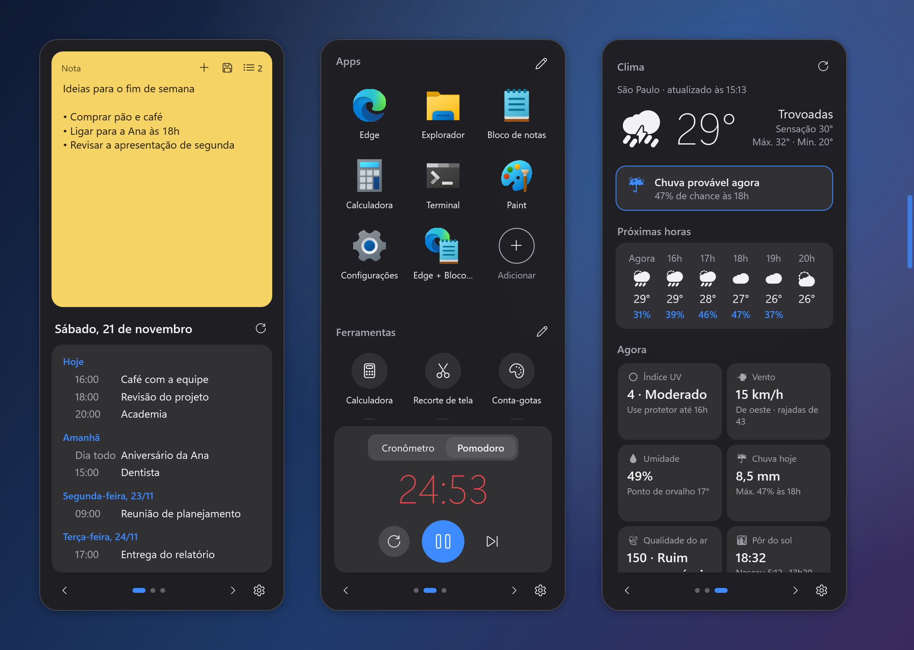
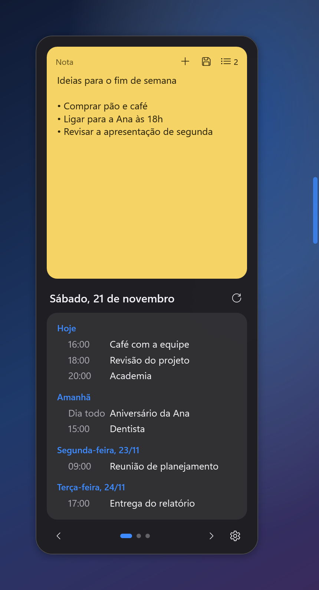
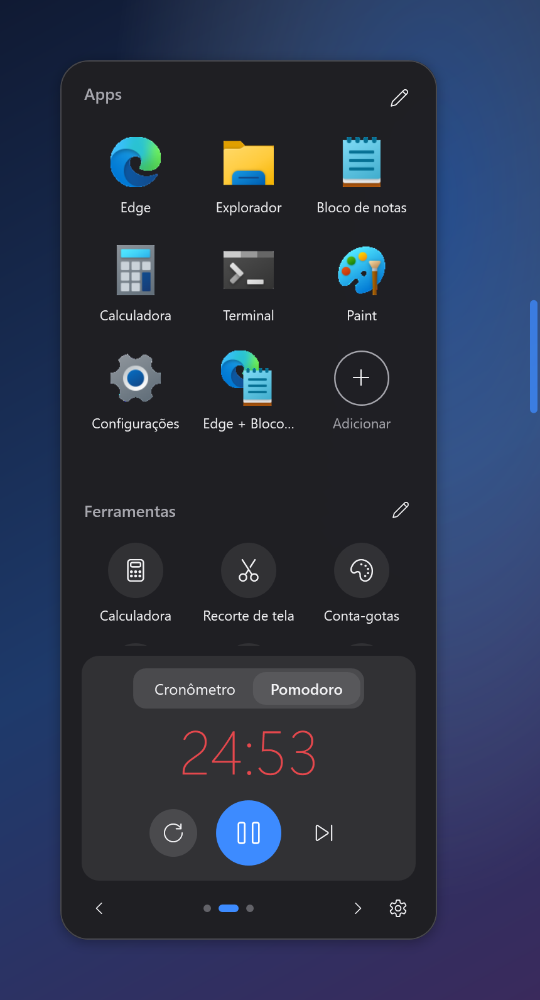
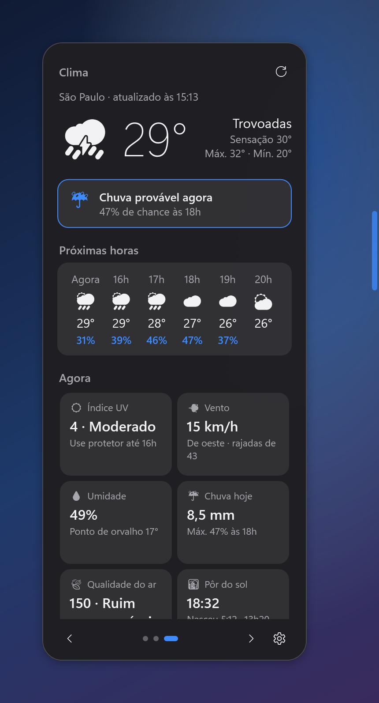
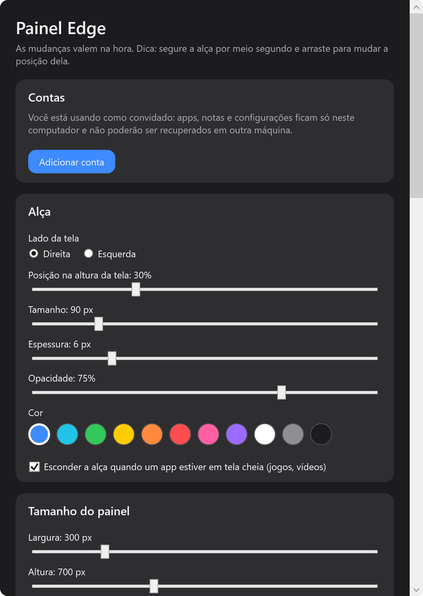
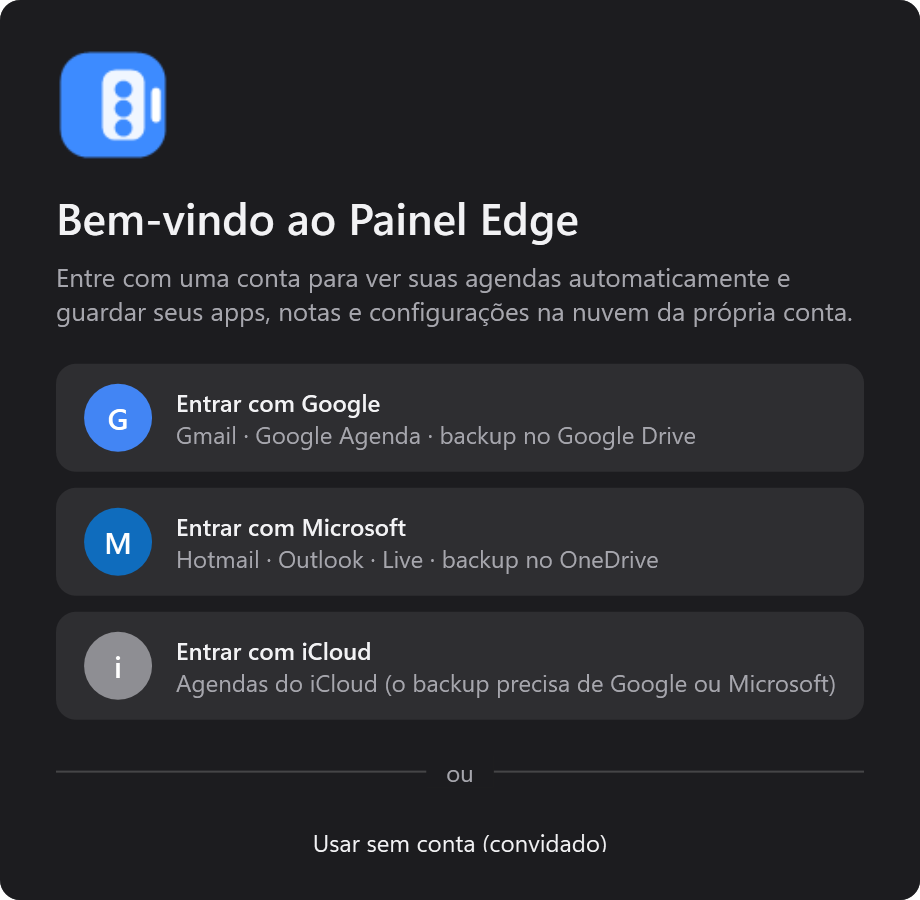

Painel Edge — Painéis Laterais Deslizantes para o Windows
App de desktop em C# com WPF (.NET 10) que traz para o Windows a ideia dos Painéis Edge dos celulares Galaxy: uma alça fina na borda de cada monitor abre, com um clique, um arraste ou só passando o mouse, um painel deslizante com nota adesiva, agenda, apps favoritos, ferramentas rápidas, cronômetro com Pomodoro e clima completo. Troca de painel com um arraste para o lado e se recolhe sozinho ao clicar fora. Roda em segundo plano, inicia com o Windows e segue o tema claro ou escuro do sistema.
🧩 Visão Geral da Interface

📝 Notas e Agenda · 🚀 Apps e Ferramentas · 🌦️ Clima
O painel desliza da borda da tela e mostra um painel por vez; arraste para o lado, use as setas, os pontos ou a roda do mouse para trocar. Clique fora, aperte Esc ou abra um app e ele se recolhe.

📝 Nota Sempre Pronta e o Dia na Mão
Nota adesiva aberta para digitar, salva sozinha, com lista de notas guardadas. Embaixo, os compromissos dos próximos 7 dias das agendas do Google ou de links iCal.

🚀 Favoritos, Atalhos e Pomodoro
Programas, apps da Store, pastas, sites e pares de apps que abrem lado a lado. Ferramentas como recorte de tela e conta-gotas de cor, e um cartão de cronômetro ou Pomodoro.

🌦️ Agora, Próximas Horas e a Semana
Aviso de chuva provável, chance de chuva por hora, UV com recomendação de protetor, vento, umidade, qualidade do ar, sol e os próximos 7 dias.

🎛️ Alça, Tamanho, Painéis e Contas
Lado, posição, cor e espessura da alça; modo de abertura; largura e altura do painel; quais painéis aparecem e em que ordem; durações do Pomodoro e localização do clima.

🔐 Com Conta ou Sem Conta
Entre com a conta Google para ver as agendas e guardar o backup no próprio Drive, ou use como convidado, com tudo só neste computador.
Prints com dados de exemplo (cidade de São Paulo, agenda e notas fictícias).
Principais Funcionalidades
Alça na borda de cada monitor:
- Abre ao clicar, ao arrastar para dentro ou ao passar o mouse (configurável). Segurar e arrastar muda a posição da alça.
- Some sozinha quando um jogo ou vídeo está em tela cheia; pode ser ocultada por 1 hora pelo botão direito.
Notas e agenda:
- Nota adesiva sempre aberta, com salvamento automático e lista de notas guardadas.
- Compromissos dos próximos 7 dias com a cor de cada agenda: Google Agenda pela conta ou qualquer link iCal (
.ics), com eventos recorrentes.
Apps e ferramentas:
- Apps favoritos de qualquer tipo, inclusive da Microsoft Store e pares de apps que abrem lado a lado na tela.
- 24 ferramentas no catálogo (12 visíveis por padrão): calculadora, recorte de tela, conta-gotas de cor, emojis, lupa, terminal, bloquear tela, Wi-Fi, Bluetooth e outras. Tudo pode ser adicionado, removido e reorganizado arrastando.
- Cartão de cronômetro (
00:00:000) ou Pomodoro com foco, pausas curtas e longas e aviso no fim de cada etapa; com pouca altura, o cartão se compacta.
Clima completo: API gratuita do Open-Meteo (previsão e qualidade do ar), localização automática pelo Windows ou cidade escolhida.
Contas e backup: login com Google por OAuth 2.0 com PKCE; o backup de apps, notas e configurações vai para a pasta oculta do app no próprio Google Drive do usuário. Ao sair da conta, o acesso é revogado na hora. Microsoft e iCloud já estão no código e serão liberados em breve.
Comportamento de serviço: inicia com o Windows, instância única e reaberto pelo próprio Windows se fechar por erro.
🛠️ Especificações Técnicas
- Linguagem: C# no .NET 10, interface em WPF, DPI por monitor (PerMonitorV2)
- Compatibilidade: Windows 10 (1809) ou mais novo, 64 bits
- Integração com o Windows: Win32 API (janelas sem foco,
SetWindowPos, detecção de tela cheia) e Shell (IShellItemImageFactory,shell:AppsFolder) - Contas: OAuth 2.0 com PKCE e retorno local, tokens protegidos com DPAPI; Google Calendar API e Google Drive (
appDataFolder) - Agenda iCal: Ical.Net
- Clima: Open-Meteo (CC BY 4.0), sem chave de API
- Distribuição: instalador Inno Setup por usuário, sem administrador, com o app autocontido; publicado nas Releases do repositório
📂 Estrutura de Arquivos do Projeto
painel_edge/
├── README.md # Apresentação e documentação
├── LICENSE # Licença comercial proprietária
├── PainelEdge.slnx
├── config/ # Configuração local (só o modelo vai para o git)
├── docs/ # Guias de login e instalador; prints do app
├── installer/ # Inno Setup, geração do instalador e do ícone
└── src/PainelEdge/
├── Accounts/ # Contas, login OAuth, backup e boas-vindas
├── Edge/ # Alça da borda e janela do painel
├── Native/ # Win32 e Shell
├── Panels/ # Notas, agenda, apps, ferramentas, timer e clima
├── Services/ # Clima, localização, agenda e Pomodoro
├── Settings/ # Configurações e notas
└── Ui/ # Tema claro/escuro e ícone da bandeja
🚀 Como Instalar
- Baixe o
PainelEdge-Setup-0.2.0.exenas Releases e dê dois cliques. Instala só para o seu usuário, sem pedir administrador. - Escolha entrar com a conta Google ou usar sem conta.
- Clique ou arraste a alça azul na borda direita da tela.
🔄 Diretrizes de Versionamento Git (Multi-IA)
- Branch
dev: Branch ativa de trabalho para desenvolvimento, novos recursos e documentação. - Branch
main: Branch estável de lançamento, sem as ferramentas de desenvolvimento. O merge dedevparamainé realizado exclusivamente mediante solicitação explícita do usuário.